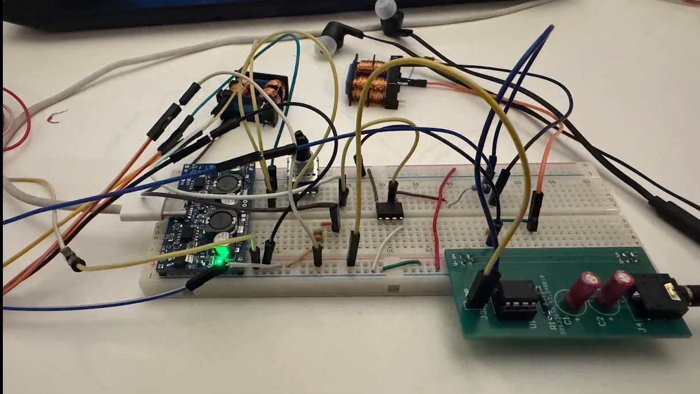
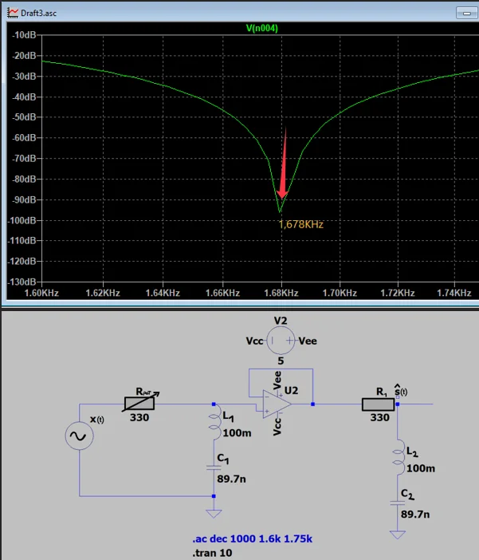
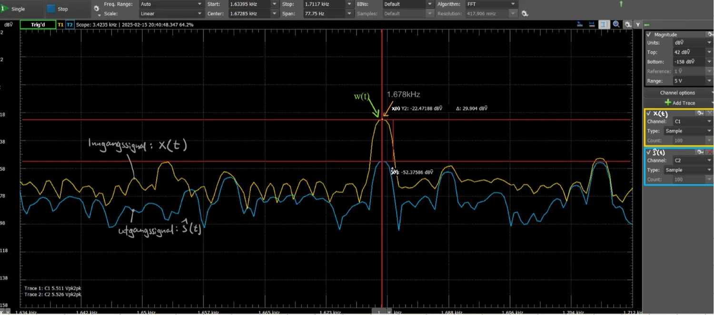
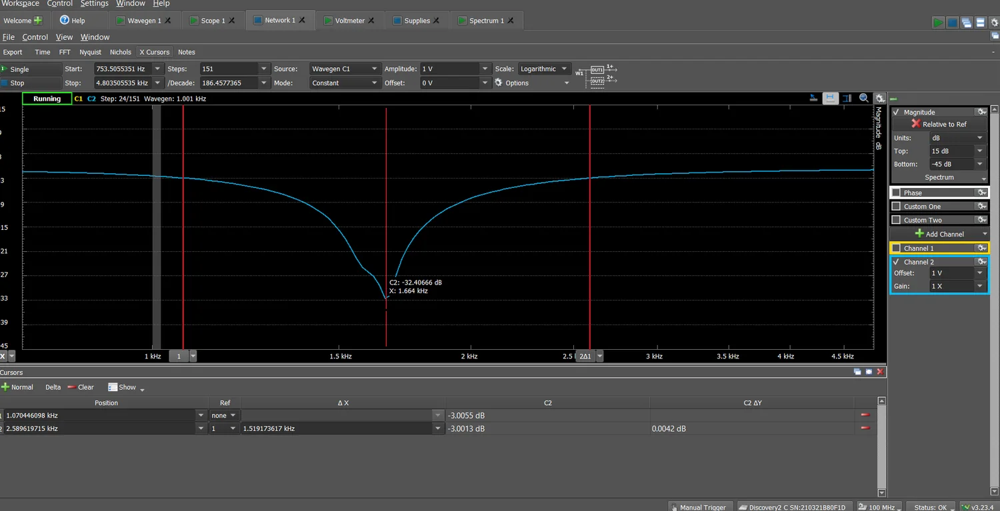

DP2 Støyfilter
To LC-båndstoppfiltre i kaskade med buffer fjerner en pipetone på 1,68 kHz fra et lydsignal.

Resultat
- Pipetonen ble dempet med 29,9 dB i spektrumanalysen.
- Målt resonansfrekvens 1664 Hz mot beregnet 1680 Hz, et avvik på omtrent 1 prosent.
- Kvalitetsfaktor på rundt 1,1. Designet er verifisert med både LTspice og Analog Discovery 2.
Figurer


